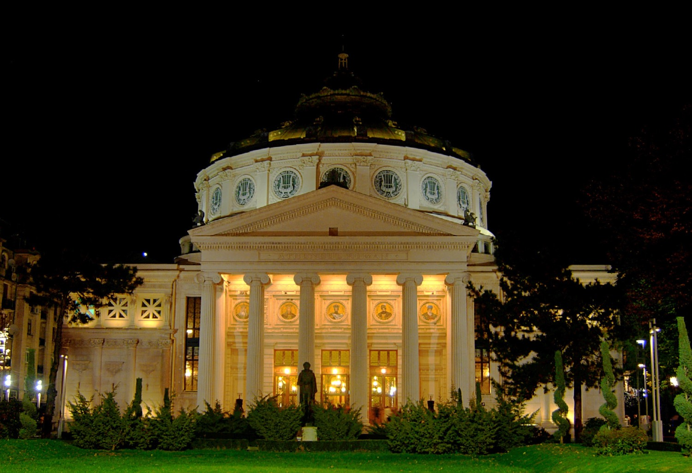
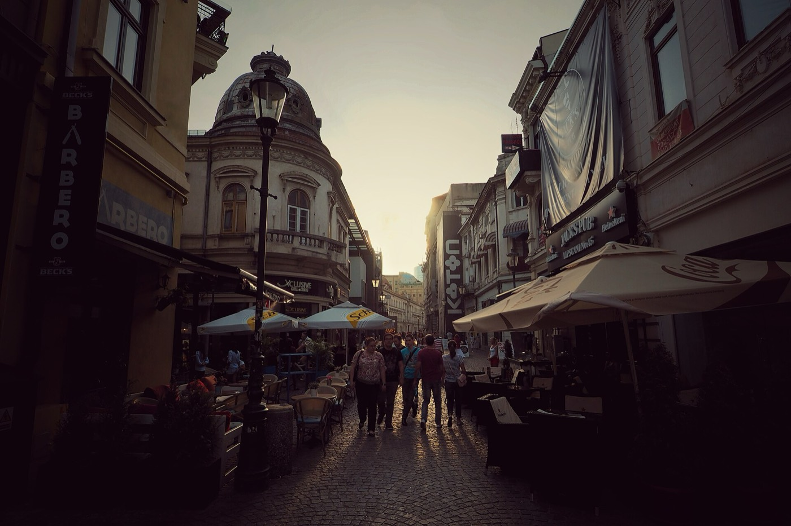
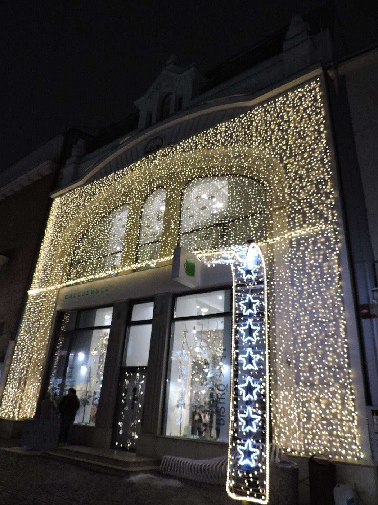
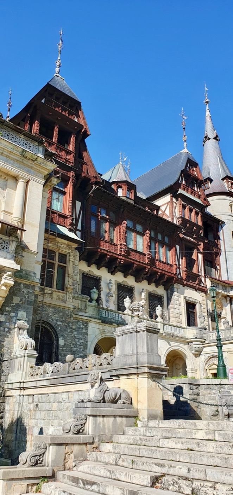
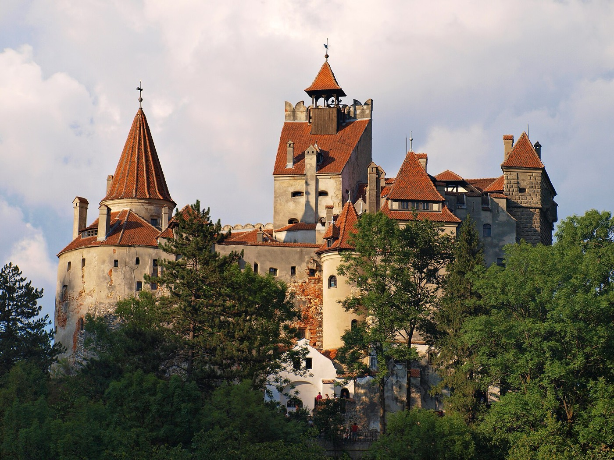
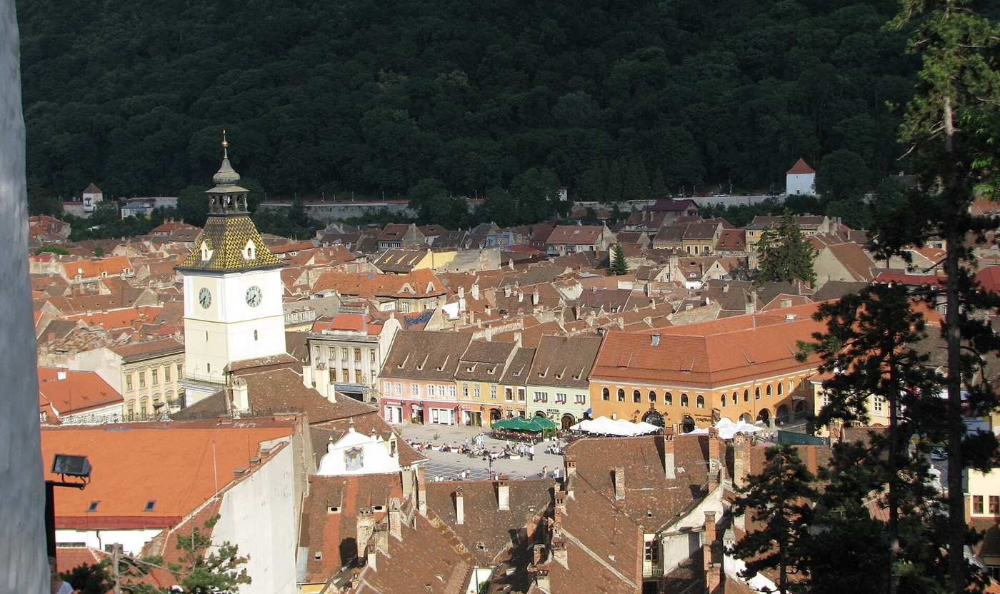
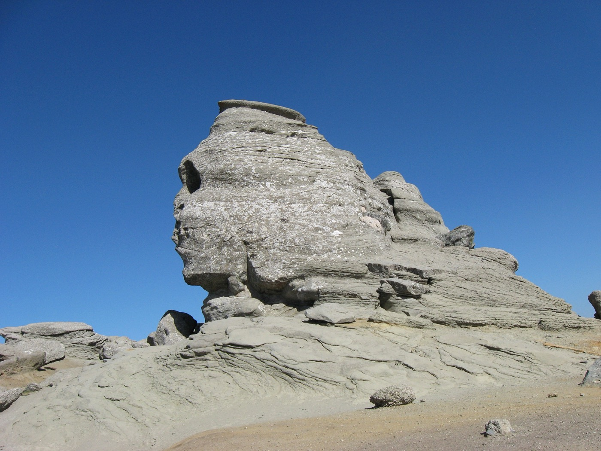
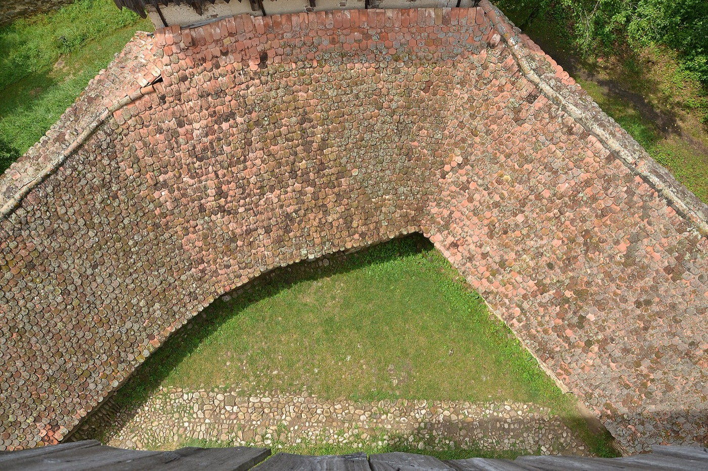

This is a weekend of contrasts: Bucharest, the elegant old "Little Paris of the East," and an hour north, the Carpathians — Saxon villages, royal castles, the Dracula legend, and wild mountains. Old and new, history and enigma, nature and a little decadence.

Romania has a bit of everything packed close together: belle-époque boulevards, Saxon villages older than most countries, medieval castles, a vampire legend, and proper mountains. That whole arc is doable in a weekend.
Bucharest is elegant and a little faded — they call it the Little Paris of the East. Then 90 minutes north you cross into Transylvania: real Carpathian peaks, lakes, royal palaces, fortified churches built by Saxon settlers 800 years ago, and the Dracula myth waiting to be played with. Old and new, beauty and enigma, history and wilderness. Give her one easy evening in the city, then get her into the mountains. That contrast does the work for you.
She lands Friday. Keep it easy and atmospheric, no big drives.
The historic core: cobbled streets, terraces, wine bars, live music spilling out of everywhere. Easy to wander, easy to charm.


Sunset on Lipscani Street in the Old Town, and the white spiral of Cărturești Carusel
Therme Bucharest, just outside the city, is one of Europe's largest wellness complexes. Pools, palm trees, saunas. Given she's in the longevity world, it's a perfect relaxed afternoon and very on-brand for you.
She's a doctor in the longevity space. So instead of just sightseeing, give her the thing nobody offers on a weekend away: a morning at our own longevity clinic.
This is the move that makes the whole trip land. Expand Labs is our longevity clinic — full biomarker and blood panels, advanced diagnostics, IV and recovery therapies, and a data-driven readout of where your biology actually stands. For someone who lives and breathes glycan age and longevity science, getting worked up properly and talking the data is catnip.
Book the two of you in for a session: labs and biomarkers, a recovery/IV drip, and a walk-through of the results. It's relaxed, it's intimate, it's exactly her language, and it shows her your world rather than just telling her about it. Pair it with the Therme afternoon and Day 1 becomes a full reset before you head for the mountains.
The big day. Drive up the Prahova Valley into Transylvania: a royal palace, Dracula's castle, and a medieval Saxon town to sleep in.

Start here. Peleș is the showstopper: a fairytale Neo-Renaissance royal palace tucked into the forest, all turrets and carved wood. Genuinely one of the most beautiful castles in Europe and almost nobody outside Romania knows it. The Sinaia Monastery and the mountain town itself are worth a short wander too.


Bran Castle on its cliff, and Brașov's medieval Council Square
The Dracula hook. A dramatic clifftop castle that's become the Bram Stoker pilgrimage site. It's touristy but undeniably cool, and you get to do the whole "my friend says I'm descended from the line" bit. Great photos, fun energy.
One of the most beautiful medieval towns in Europe and the perfect base. Pastel old town, the Black Church, the lively Council Square ringed with restaurants, and the Tâmpa cable car for a sunset view over the red rooftops. Have dinner in the square. This is the romantic anchor of the trip.

Sunday. Brașov in the morning, then the place that seals it before you head to the airport.

This is the one Claudia and I went to. A tiny 12th-century Saxon village, UNESCO listed, with a white fortified church, dirt lanes, horse carts, and houses King Charles spent years restoring (he owns a house here). It feels like stepping 300 years back. Slow, beautiful, completely unlike anywhere else. Buy honey and wool from the locals, climb the church tower for the view over the hills.
If Viscri is too far given your flight, swap in Râșnov fortress (right by Bran) or the medieval citadel of Sighișoara — Dracula's actual birthplace, another UNESCO old town.
A longevity-clinic morning that speaks her exact language. The secret weapon.
The fairytale royal palace at Sinaia. Non-negotiable.
Dinner in the medieval square. The romantic anchor of the trip.
Lean into the legend and the enigma. She'll love the story.
Viscri or Sighișoara. 800 years of history, and the part she won't see coming.
Little Paris for a night, Carpathian wilderness for the rest. That's the arc.